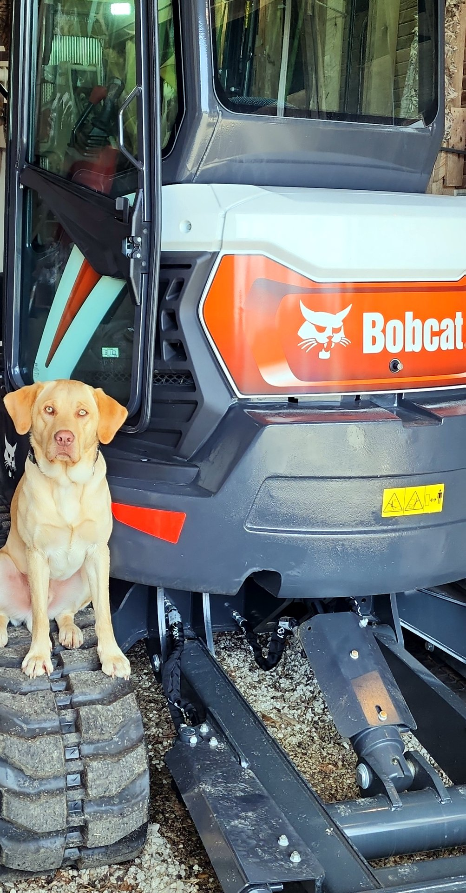

About
Local land management with practical equipment, straight answers, and Archie nearby.
Lil Yellow Dog Diggin keeps things useful and down to earth. The work is real, the tone is relaxed, and the yellow lab in the photos is Archie, chief morale officer.
Why property owners call
They need overgrowth handled, a driveway fixed, a fence row cleaned up, or a small dirt-work project completed without turning it into a major construction job.
Lil Yellow Dog Diggin is positioned for practical, right-sized work around rural homes, small farms, acreage, and recreational property. Archie is positioned wherever the best view is.

Contact
Request an estimate
Call or text with the property location, a few details about the work, and any photos that show the area. Bonus points if the photos help Archie understand where he would supervise.